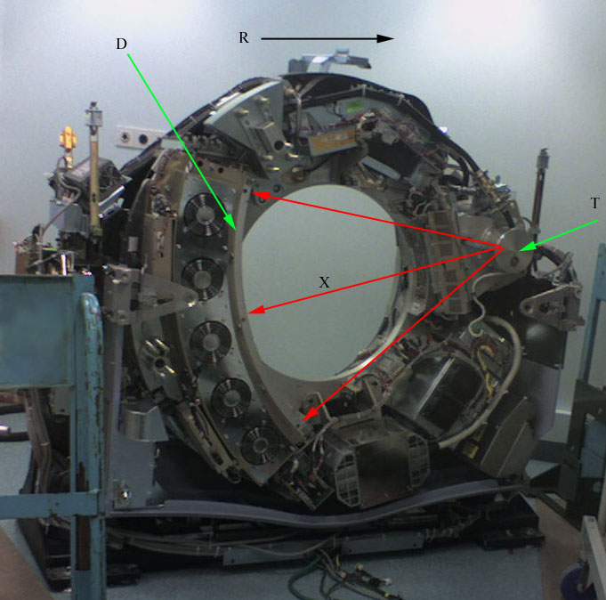
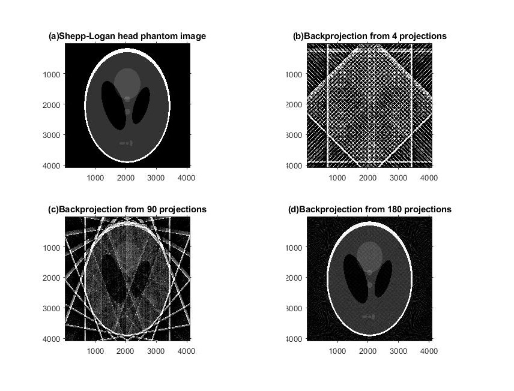

有关于拉东变换的简单应用
八月 16, 2021
简述
拉东变换(Radon Transform)，简单来说即是对一个平面上的线A进行积分，从而转换为一个点。而其逆运算，即逆拉东变换则是将得出的结果再还原为原先的线。
该数学变换如今在医学成像得到了广泛的应用(如计算机断层扫描)。
实际运用
下图为计算机断层扫描仪(简称’CT机’)的扫描部分结构图。

CC BY-SA 3.0, https://commons.wikimedia.org/w/index.php?curid=1664367
图中的T所指部分为X光管，通过其发射X光穿透人体并被D所指部分，即X光探测器所接收。而最终X光探测器测得的仅是透过整个被扫描部位的X光强度。而这个过程可视作进行了一次拉东变换。
通过朗伯-比尔定律(Lambert-Beer law)，我们可以得知一个部位的吸光强度与其密度有关。
因此，对得到的数据做一次逆拉东变换，即可得到各部位的密度，从而输出一张扫描部位的密度图。
下面为其简单应用的Matlab代码。
1 | P = phantom('Modified Shepp-Logan',4096); |
图像输出如下:

在这串代码里，我们使用了Matlab内的phantom函数生成了一张经典的Shepp-Logan图，随后通过radon()函数模拟X光管对其进行了三次拉东变换。
再通过iradon()函数对其进行逆拉东变换后，即可得其模拟成像。
查看评论